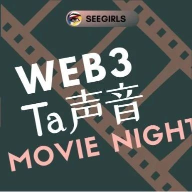

SeeGIRLS | 滨口龙介《偶然与想象》观影会
作者: SeeDAO
分类:
SeeGIRLS, web3女性, SeeDAO
几周前我们挑选了一部以女性视角讲述故事的电影《偶然与想象》，组织了一次线上观影活动，来和大家一起观影并分享感受。

我们这期挑选了一部以女性视角出发的电影——《偶然与想象》，还邀请到了各位小伙伴在线上共同观影与讨论～
《偶然与想象》 滨口龙介
豆瓣简介：影片由三个短片构成——《魔法（比魔法更不真切）》《开着的门》《再来一次》。女性角色的多重性和镜像性是滨口之前的作品中的主题，在他的新作《偶然与想象》中也是如此。三个短片讲述了一个意想不到的三角恋、一场未遂的诱惑和一个因误会而相遇的故事。这不仅仅是由于对话的缘故，还在于其复杂的时空概念，最后一集几乎变成了科幻片。我们所见证的时刻都与感人的普遍命运相连，以选择、遗憾、欺骗和巧合为标志，它们是影片真正的主角。
刚才在观影时，一边沉浸在电影中，一边还能看到弹幕区小伙伴的及时讨论，这种互动感觉非常棒。我想起李安导演曾经说过的一句话，大意是说电影是在大荧幕上呈现出来后，在观众内心激发出来的那个东西。现在我非常能理解这句话的含义，我不太认为在电影院里面讨论是不好的事情，平日里去影院看电影时我也很喜欢观察周围观众产生的各种反应或讨论，这些都是大家在观影时及时的感受。电影里所呈现的人物动机和路线虽然有一些出人意料的情节，但在我这边其实都是合理的，也都能在剧情内自洽。导演用了非常朴实简洁的镜头，比如定格和长镜头，当叙事一到人的想象的时候，就会有一个推拉的动作来辅助影片的叙事。这些镜头并非为了炫技，而是为了更好地引导观众，让他们更深入地理解故事并深刻地感受电影中的角色。在电影中我看到的是人的寂寞，以及因为寂寞，人可能做出的冲动行为。人在城市生活中的情感需求，某种程度上就是寂寞的体现。电影中的三个小故事都反映了人们在城市中对情感需求和寂寞的探索。人们渴望那些情感互动的瞬间，希望与他人建立深刻的连接，但这种深刻的连接通常不是随时随地都能实现的，它往往在偶然和想象之间发生。这部电影的独特之处在其丰富的对话和相对简单的情节。比如第二个故事只包含了四个场景：偷情的房间、老教授的办公室、女主角的家以及公交车上。这些场景都非常常见，故事的发展也不会超出我们的预期，但每一个情节转折都与人们对感情的期望和想象相契合，然后人们对情感的某种渴望被想象所化解。这部电影的核心主题聚焦在各种亲密关系中，导演在拍摄和制作方面采用了一种极简的风格，影片几乎完全依赖环境音，没有过多的背景音乐，镜头运用也相当朴素。但我觉得在这种简洁之下，暗藏了许多精心设计的小心思。例如在第一个故事中的女主角Meiko，她的外貌和着装应该是经过精心挑选的，可能是特意找了一个可爱的女孩子，去凸显她情感的幼稚。一开始，她穿着一件连帽衫和休闲裤，但却穿着一双颜色非常深的高跟鞋，这种不协调感的着装仿佛是一个孩子穿着大人鞋子的感觉，这或许意味着她在情感上的不成熟，以及她试图适应一种不太适合她的情感状态。在第三幕中，三个人的着装似乎也有着深意，女二Gumi是非常开放的一个穿着，而男主和女主穿着高领并套了外套，这种着装上的对比或许在暗示着两个人之间的状态和关系并不是那么轻松。故事的最后一个镜头是花，虽然无法确定它的确切含义，但我相信它有一定的用意，也许象征着她对感情的放下，以及自我在情感中的一个成长。或许有点过度解读，但它们为电影增添了丰富的细节和观影感受。我认为这并不是过度解读，因为在电影拍摄制作中，出现在镜头前的元素都会经过精心设计。例如在第二个故事中的小包袱，从对话中能了解到女主奈绪克服了重重压力去了学校，却在学校遭受其他女生的排挤，当她躺在地上说我很难受时，男主却毫不在意她的感受，嘻嘻哈哈的当笑话去讲，甚至到后面威胁她如果不满足他的请求，就要离开和孤立她。这一幕清楚地表明这位男主并不是她真正的男朋友，这也引出了后续剧情的发展，埋下了伏笔。我感觉奈绪似乎面临着许多心理上的挑战。影片中一个让我印象深刻的瞬间是，她在与教授交谈时受到了他的感染被打动，有了打开心扉的冲动，想要分享一些事情。她提到要从很小时候开始讲，但并没有继续谈及她的家庭情况，这给观众留下了一个巨大的想象空间，可以自行想象她的成长背景可能对她的性格和内心产生了怎样的影响。是的，我觉得这三个故事都具有微妙的情感转折，虽然这些转折没有被放大呈现。但我清晰地看到女性角色一开始都处于一种被动、被抛弃或没有找到真爱的状态，或者承受了生活的打击，然后一度陷入了被PUA的状态，但最终她们发现了自我，寻找到了内心的坚定和自我价值，变成了一个自我发现的过程。比如在最后一个故事中，两位主角彼此互相扮演了彼时的另一半，重现了过去的情景，通过对话也解开了内心的结。对，当初可能会为了被爱，但爱而不得而做一些事情，后来慢慢明白，真正重要的是自己内心的愿望，而不只是为了得到那份爱或认可。这是一个关于自我认知和成长的过程，电影中的主人公也经历了这种变化。提到这种变化，我挺喜欢第一个故事中的Meiko这个角色，当她去找男主的时候，虽然她一直在不停地说话，但其实一直在绕圈子，一边提问又一边编各种理由合理化。我感觉她其实并不是很在意男主，而是在担心自己，她希望能够与自己的内心和解，直到做出决定。确实，相信第一个故事里的情节在现实生活中很多人会有共鸣点，虽然偶遇这种偶然的情节可能不常见，但像Meiko那样的情感和行为很普遍。她表现出一种矛盾的情感，既想放手，又不愿彻底放下，这或许也反映了当我们面对失去时内心感到害怕和难过的情绪。文字编辑 | T1NG
排版 | T1NG
审核 | Ines